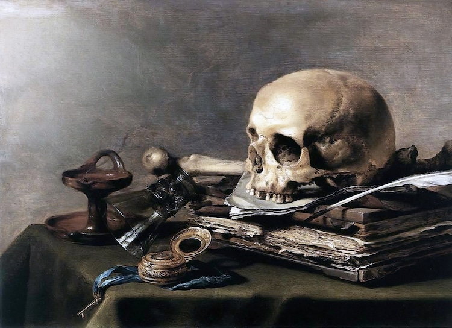

| Veke | Dato | Tema |
|---|---|---|
| 13 | 30. mars | Nynorsk og språkhistorie |
| 14 | påskeferie | |
| 15 | påskeferie | |
| 15 | 20. april | Presentasjon 2 |
| 16 | 27. april | Romantikken og nasjonalromantikken |
| Time | Klokkeslett | Tema |
|---|---|---|
| 1 | 13:45-14:30 | 1.1. Quiz 1.2. Romantikken 1.3. Samanlikningsoppgåve |
| 2 | 14:30-15:15 | 2.1. Norsk språkdebatt på 1800-talet 2.2. Danomani, fornorsking, eller nytt språk? 2.3. Kva med samnorsk? |
| Pause | 15:15-15:35 | |
| 3 | 15:35-16:20 | 3.1. Nynorsk grammatikk 3.2. Omsetjingsoppgåve 3.3. Gjennomgåing av omsetjing (Alternative oppgåver for dei med unntak.) |
| 4 | 16:20-17:00 | 4.1. Søknad 4.2. Sjølvstendig arbeid 4.3 Val av kva du søker på |
Kva for ei tid er kjent for sitt fokus på mennesket? (1p)
Kva for ei tid er kjent for denne symbolismen? Kva heiter denne symbolismen? (2p)

Kva for ei tid er kjent for sitt fokus på Gud? (1p)
I kva for ei tid byrja debatten om fridommen til kvinner? (1p)
Kva for ei tid høyrer Ludvig Holberg til? (2p)
Kva for ei tid høyrer Mary Wollstonecraft til? (1p)
Kva for ei tid høyrer Caravaggio til? (1p)
Barokken (1p)
I kva tid hamra Martin Luther sine 99 tesar på kyrkjedøra? Kva heiter rørsla [bm. bevegelsen] som følgde denne hendinga? (2p)
I kva tid skreiv Immanuel Kant at menneskjer er skuld i sin eigen umyndigheit når dei er late eller feige? (1p)
Kven fant opp essayet og i kva for ei tid fant dei det opp? (2p)
Kva for ei tid er kjent for sitt fokus på mennesket? (1p)
Renessansen (1p)
Kva for ei tid er kjent for denne symbolismen? Kva heiter denne symbolismen? (2p)
Barokken (1p), Memento mori (1p)
Kva for ei tid er kjent for sitt fokus på Gud? (1p)
Barokken (1p)
I kva for ei tid byrja debatten om fridommen til kvinner? (1p)
Opplysningstida (1p)
Kva for ei tid høyrer Ludvig Holberg til? (1p)
Opplysningstida (1p)
Kva for ei tid høyrer Mary Wollstonecraft til? (1p)
Opplysningstida (1p)
Kva for ei tid høyrer Caravaggio til? (1p)
Barokken (1p)
(0.5p for Renessansen)
I kva tid hamra Martin Luther sine 99 tesar på kyrkjedøra? Kva heiter rørsla [bm. bevegelsen] som følgde denne hendinga? (2p)
Renessansen (1p), Reformasjonen (1p)
I kva tid skreiv Immanuel Kant at menneskjer er skuld i sin eigen umyndigheit når dei er late eller feige? (1p)
Opplysningstida (1p)
Kven fant opp essayet og i kva for ei tid fant dei det opp? (2p)
Michele de Montaigne (1p) i Renessansen (1p)
Den tyske, romantiske filosofen Friedrich Schelling skreiv at
Naturen er den synlige ånd, mens ånden er den usynlige natur.
Hugseregel: romantikken er atterfødinga av barokken utan det barokke fokuset på religion.
Hvor trives noget godt og skjønt
og stort i tvang?
Kvel engen – gresset blir ei grønt;
bind ørnen, dør den på sin [stup];
stans kilden, som med sang begynt
har raskt sin gang,
og den en giftig sump vil bli!
Naturen hater, sterk og fri,
all tvang.
Kan åndens kilder, tankens flukt
da tåle tvang?
Skal sannhet [bare] stråle smukt,
i eget hjerte innelukt,
som jamrende Aladdins frukt
i hulen trang?
Nei, presse, løft din sterke arm!
befri all verden i din harm
fra tvang!
Norsk språkhistorie 1. 500–700 Urnordisk 2. 700–1350 Norrønt 3. 1350–1525 Mellomnorsk 4. 1525–nå Moderne norsk
Moderne norsk er eit svært omgrep. Det handlar både om dansk, dialektar, bokmål, nynorsk, og alt i mellom—og utviklinga er sterkt påvirka av romantikken og etter kvart òg nasjonalromantikken.
Tre perspektiv:
Kven syntest dokker har det beste argumentet?
Kan ein endre ett språk ved å endre på orda?
Asbjørnsen og Mo publiserte sin eventyrsamling på ein fornorska dansk, med dansk base tillagt norske ord og fraser som representerte dei lokale dialektane sine kjenneteikn.
Bør me omgjere nynorsk og bokmål til berre eit språk?
I blogginnlegget «Farlege barneforteljingar: kyssar du ein frosk, kan du ramle uti vatn og drukne», tek/tar Anne Viken eit oppgjer med dei som seier at vi må verne/beskytte barn/born mot skadeleg litteratur. Med dette meiner dei til dømes «Kardemommeby» og andre, etter Viken si meining/ Vikens meining uskyldige/uskuldige barneforteljingar. Vernet har gått alt for langt, skriv ho, og bruker/brukar både humor, ironi og sarkasme for å støtte poenga sine.
Poenget til Viken/ Vikens poeng ser ut til å vere enkelt: Hennar generasjon har ikkje tatt skade av tradisjonell barnelitteratur, og det gjer ikkje borna/barna i dag heller. Det som er skadeleg er å verne/beskytte dei mot alt og alle. Om dei ikkje kan tole eit eventyr som barn, korleis skal dei da tole røyndomen/røynda/verkelegheita som vaksne?
Me skal øve ennå meir på retorikk.
Me skal samstundes røyne oss på noko ekstremt vektig for dokker: å skrive ein god søknad.
Dokker kan velje om dokker vil skrive ein jobbsøknad eller ein studiesøknad.
Draum deg fram to-tre år. Kva for ein jobb eller studie har du?
I dag skal me jobbe med punkt 1 og 2 sånn at du er klar til 20. april.